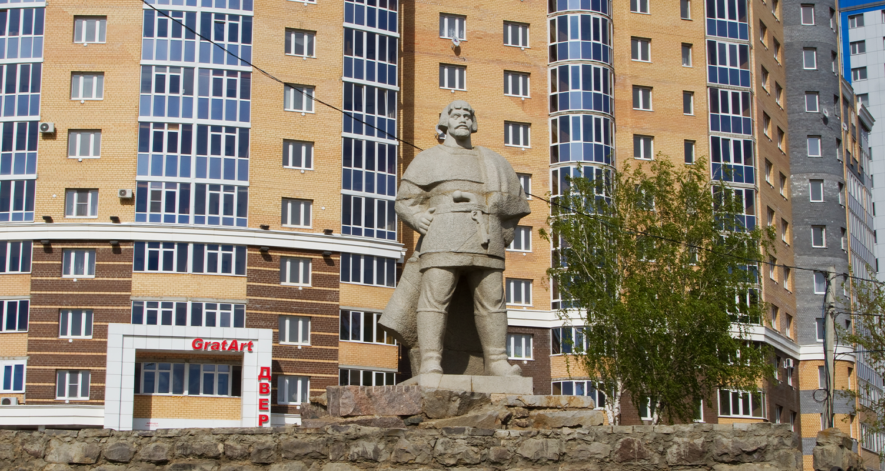

Пугочов
Один из наиболее известных в российской истории повстанцев гостил в городе с 27 по 30 июля 1774 года. Это событие навсегда вошло в историю Саранска. Пугачев дал вольную крестьянам, провел амнистию, делил захваченное имущество между своим войском и жителями. Также отдавал приказы о казнях оставшихся верных царице военных и гражданских лиц, богатых горожан.
Встречали Емельяна Пугачева как дорогого гостя. В городских церквях звонили колокола, а жители Саранска во главе с духовенством толпились у моста через реку Инсар. Архимандрит Саранского Петропавловского монастыря Александр встречал великого мятежника с крестом и Евангелием и преподнес царю-самозванцу хлеб-соль. Сегодня в этом месте установлена мемориальная доска.
Особо почитаемым у историков местом является небольшой каменный дом, сохранившийся в столице Мордовии на улице Московской – Пугачевская палатка. Он принадлежал Авдотье Каменецкой, вдове саранского воеводы. Там был дан торжественный обед в честь приезда Пугачева, там же по легендам он хранил награбленное и чинил самосуд над знатными дворянами. Согласно преданию, с его крыльца глашатаи зачитывали манифесты, изданные предводителем крестьянского восстания, провозгласившим себя царем